アルルの円形闘技場 （中央がサラセンの塔） |
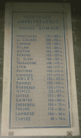 円形闘技場大きさ番付 |
| 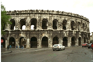 ニームの円形闘技場 |
プロヴァンスはその名が示すとおり、ローマの属州（プロヴィンキア・ロマーナ）として四世紀ごろまでローマの統治下にあった。そのため、ローマの都市特有の劇場、広場、浴場、闘技場などの遺跡が数多く残っている。これらの遺跡のうち、いくつかは補修しながらもいまだ現役で使用されている。
オランジュの古代劇場はローマ帝国の劇場跡としては最も保存状態のよいものとして知られている。約一万人が収容できる。アルルの劇場も規模は同じくらいだが、外壁と舞台の一部が残っているのみ。
|
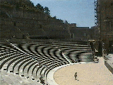 オランジュの古代劇場 |
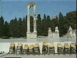 アルルの古代劇場 |
プロヴァンスの主な円形闘技場の大きさ番付表がアルルの闘技場前に掲げられている。アルルの闘技場は中世には要塞としても使用された。その名残りが「サラセンの塔」とよばれる見張り塔に残っている。ニームにもほぼ同じ大きさの闘技場があり、同じく要塞として用いられた。
アルルの円形闘技場 （中央がサラセンの塔） |
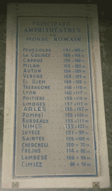 円形闘技場大きさ番付 |
| 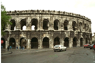 ニームの円形闘技場 |
ローマ時代の浴場は憩いの場所であったらしい。温浴、冷浴、サウナにプールもあった。現代のスポーツジムみたいなもの。アルルのコンスタンティヌス宮（トルイユ大浴場）は最も大きくよく保存されている。グラナムにも浴場やサウナ、プールの跡が残っていた。サウナは写真に見えるレンガの下から熱して蒸気を送るシステムらしい。パリ五区のクリュニー修道院にも浴場の遺跡が残っている。
| 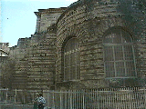 アルルのトルイユ大浴場 |
 グラナムのサウナ跡 |
ポン・デュ・ガール（ガール橋）はユゼスの湧き水を50km離れたニームに引くためにガルドン川につくられた水道橋。全体の高さは約50ｍある。３層構造になっており、水を引いていた１層目、２層目は現在使われていない。 ３層目は現在でも人や車が通っている。
| 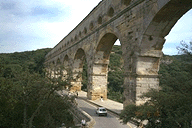 ポン・デュ・ガール |
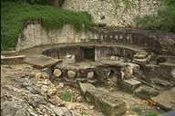 ニームの集水場跡 |
ポン・デュ・ガールからひかれた水路の終点がニームの城塞遺構に残っている。この集水場からニームの市内へ配水されていたそうだ。18世紀に造られた泉水公園の中にある古代遺跡にもこの水が供給されていたのだろう。ニームの考古資料館にこれらローマ時代の給水システムの模型があったので興味のある人はどうぞ。
| 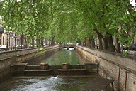 ニーム市内の運河 |
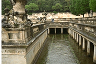 泉水公園 |